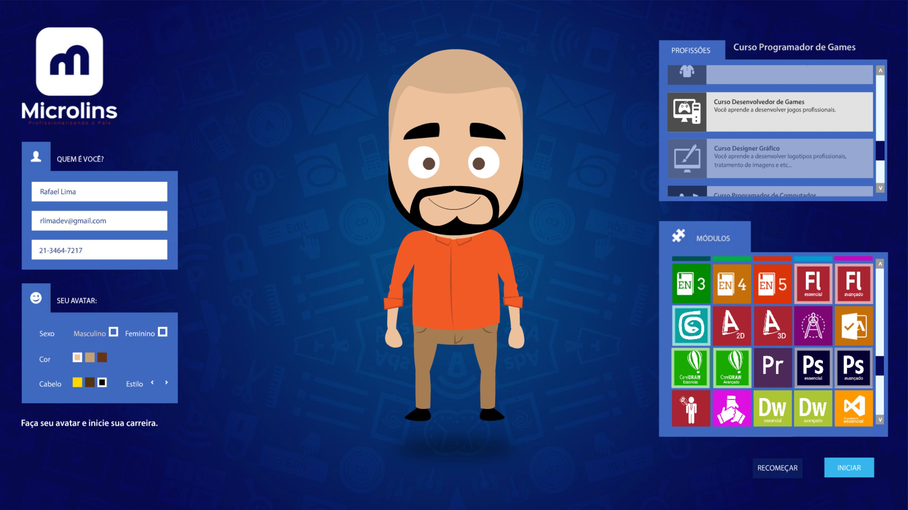
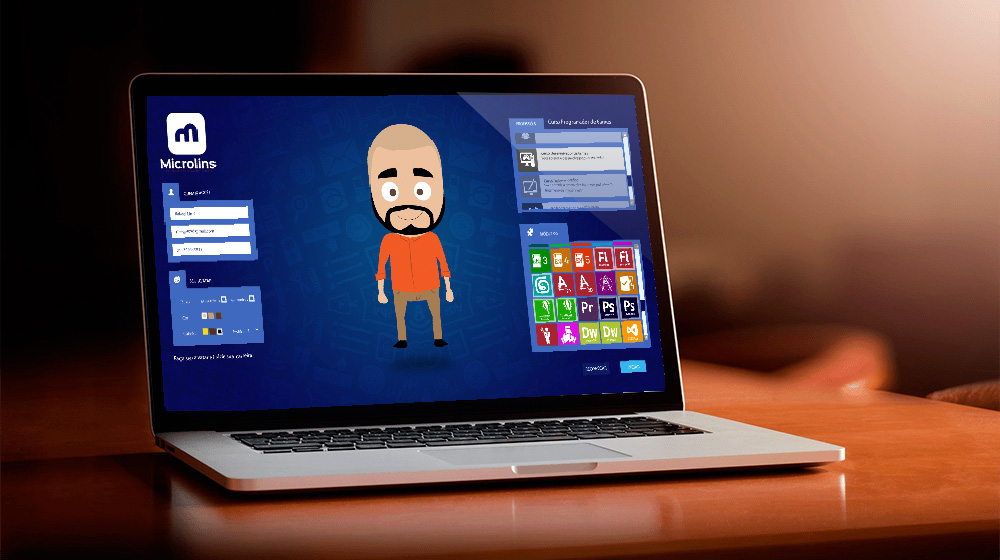

- Home
- >
- Portfólio
- >
- Microlins
Microlins
Descrição do projeto
Jogo Interativo desenvolvido em parceria com a Boxis Interactive. O Objetivo do projeto é ajudar a Microlins com o marketing da empresa para catalogar um banco de dados de alunos de forma interativa e divertida.
Tecnologias utilizadas: Adobe AIR SDK (Windows) e SQLite para armazenamento do banco.
